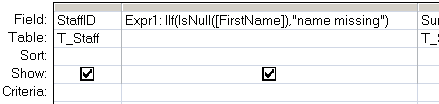
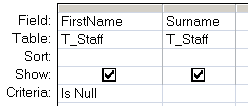

Return TRUE if the expression is NULL, otherwise return FALSE.
Syntax
IsNull(expression)
Key
expression A string or numeric expression.
The IsNull() function can be used in VBA or in an SQL query.
MS Access makes a distinction between an empty string "" and a NULL value. If you type something into a field and then delete it, you will be left with a zero length string, in contrast if nothing has ever been entered into a field it will be NULL. IsNull() will only detect NULLs.
Examples
In a query:

In SQL queries it is also useful to use the SQL IS operator with Null to find Null values:

In VBA:
Dim boolDemo as Boolean
boolDemo = IsNull(Me!txtDescription)
If boolDemo = True Then Msgbox "A required value is missing!"
“Art is the elimination of the unnecessary” ~ Pablo Picasso
Related:
Nz - Detect a NULL or a Zero Length string.
IsEmpty - Test if an expression is Empty (unassigned).